阿里云数据库RDS
https://help.aliyun.com/document_detail/55665.html?spm=5176.rdsbuy.0.204.108a752fB6RnA0
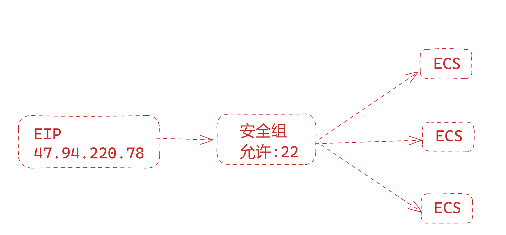
ECS部署java
弹性IP流量费用值得就是，例如你上传数据，走公网IP，产生的流量费。
# 为了省流量，yum装得了，真是抠门呀！
[root@devops-web01 ~]# yum install java tomcat
[root@devops-web01 ~]# java -version
openjdk version "1.8.0_362"
OpenJDK Runtime Environment (build 1.8.0_362-b08)
OpenJDK 64-Bit Server VM (build 25.362-b08, mixed mode)
[root@devops-web01 ~]#
[root@devops-web01 ~]#
[root@devops-web01 ~]# systemctl start tomcat
[root@devops-web01 ~]#
[root@devops-web01 ~]# netstat -tunlp|grep 8080
tcp6 0 0 :::8080 :::* LISTEN 1933/java
[root@devops-web01 ~]#
RDS购买
选择RDS页面
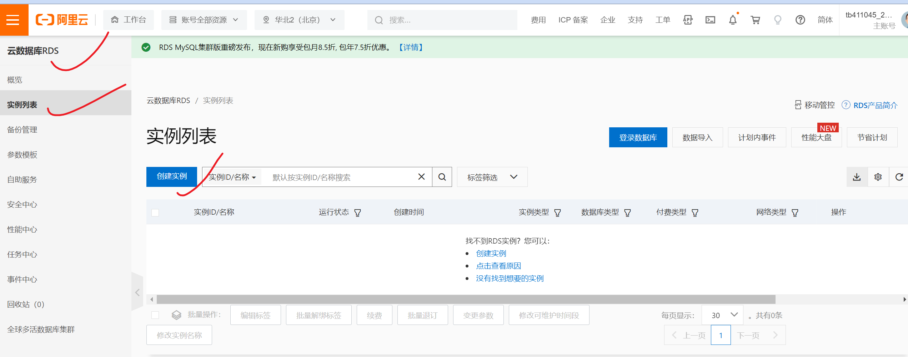
按量付费购买数据库产品，和之前学的数据库架构一样
理解下，不通规格，架构的数据库，使用的生产场景
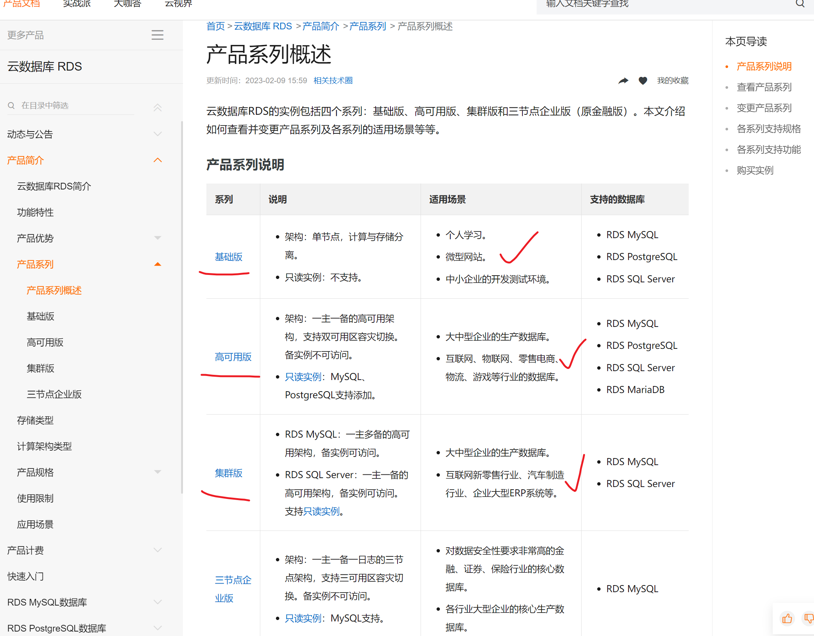
主从复制、MHA、高可用也不需要你搭建了，只需要花钱买即可。
针对公司业务选型RDS规则，以及支付架构的费用。
RDS-mysql文档
https://help.aliyun.com/document_detail/96047.html RDS mysql部分
https://help.aliyun.com/document_detail/26092.html RDS架构
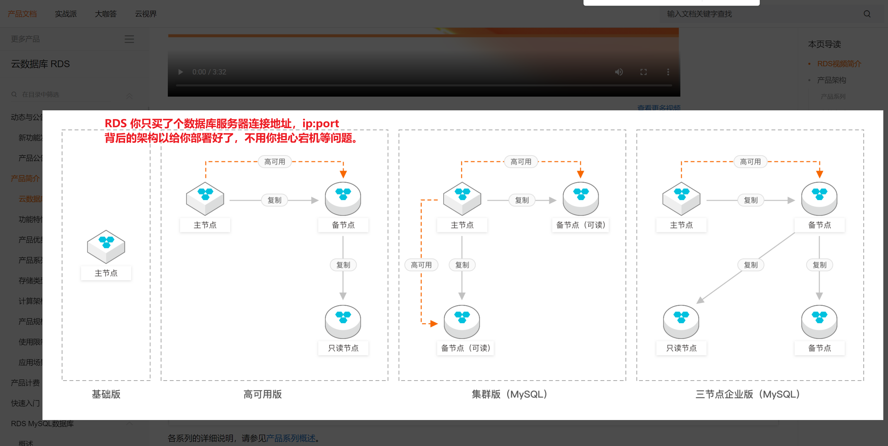
购买RDS（穷人版）
于超老师购买的版本
按量付费
北京
mysql5.7
高可用版本
可用区J 北京
1c 2GB内存 20GB磁盘
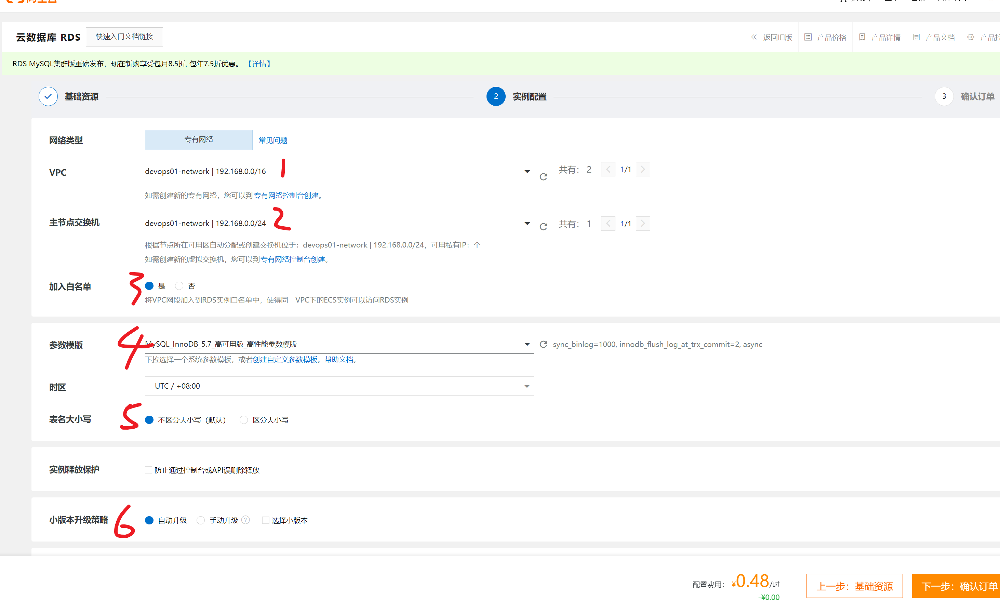
mysql优化阿里云也以最优标准，制作好了标准模板。
最终RDS-mysql标准
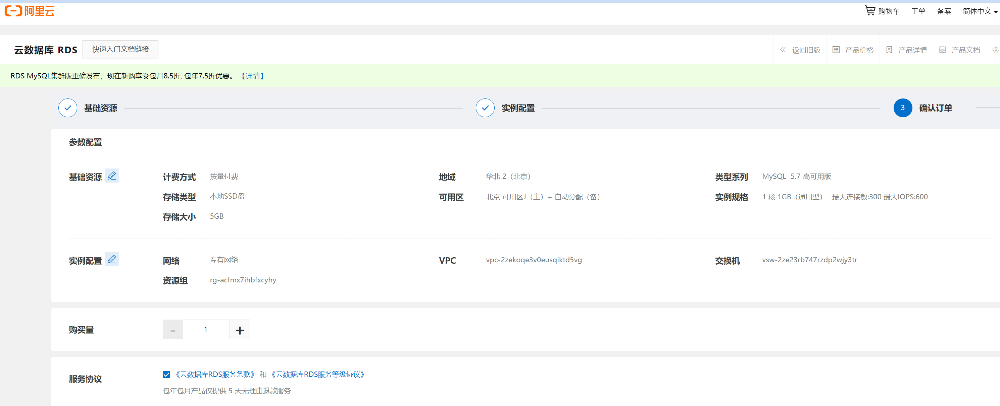
RDS-mysql创建中
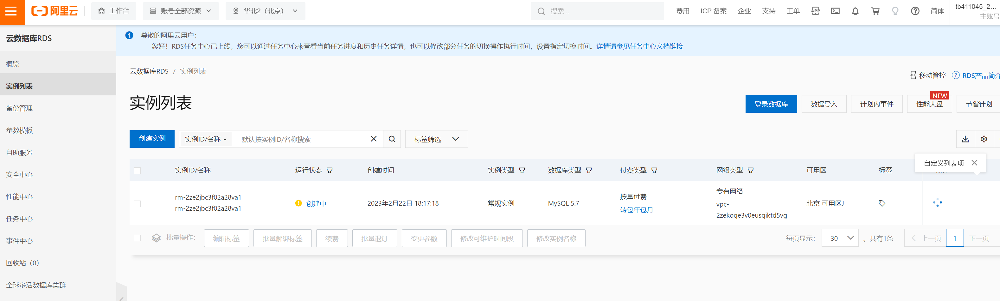
启动jpress（阿里云版）
ECS启动tomcat
yum install java tomcat
java -version
systemctl start tomcat
netstat -tunlp|grep 8080
cd /usr/share/tomcat/webapps/
mv ~/jpress.war .
netstat -tunlp|grep 8080
tcp6 0 0 :::8080 :::* LISTEN 1933/java
打开安全组
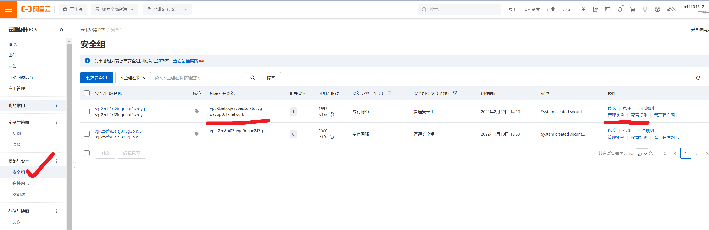
添加允许tomcat访问
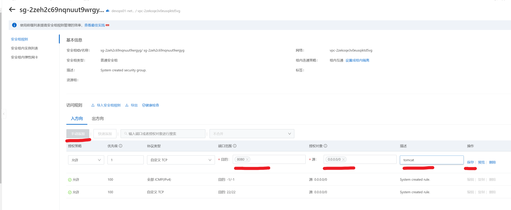
访问jpress
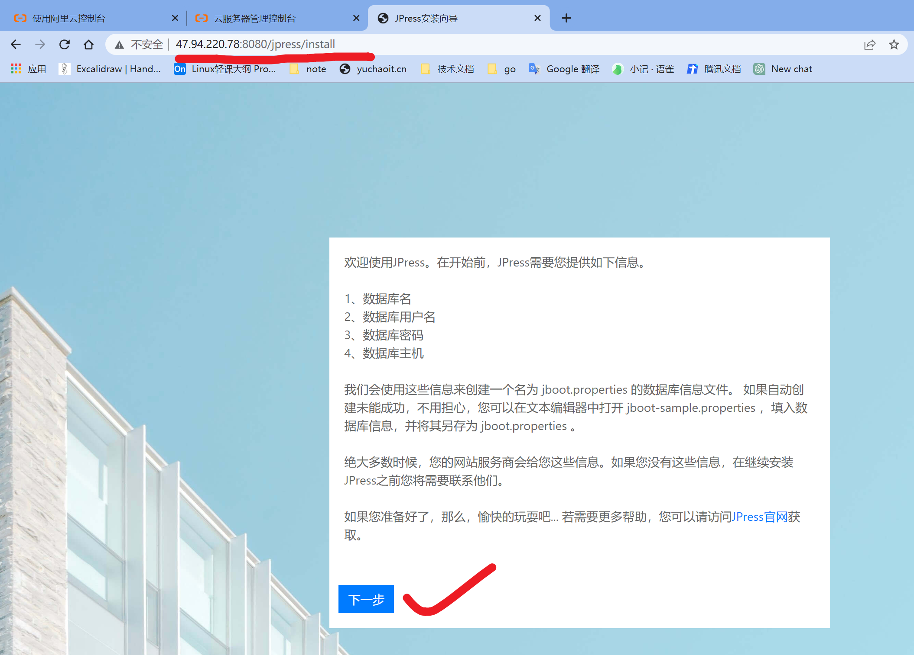
如何连接RDS-MySQL
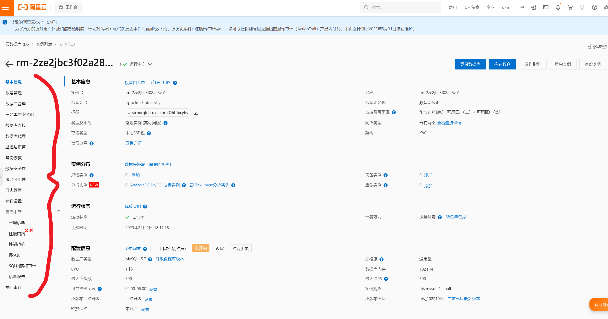
打开RDS外网连接
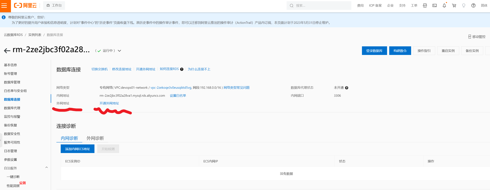
设置RDS外网白名单
这就得获取你客户端的IP地址了。
若是没必要走公网，可以跳过，也更安全。
设置内网RDS白名单
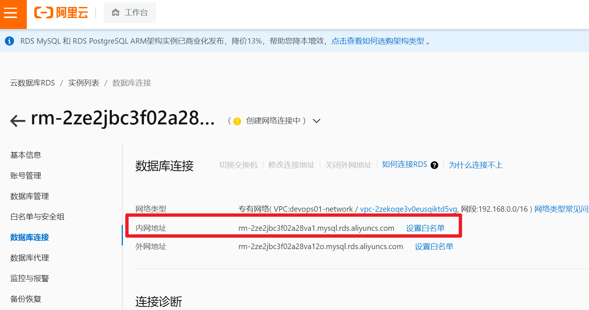
查看白名单网段规则
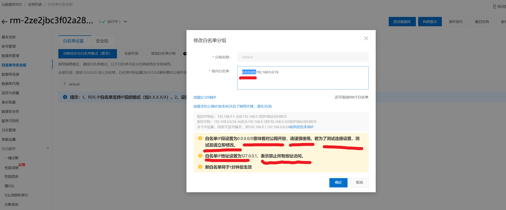
填入你的ECS网段
允许你自己的ECS，走内网，连接RDS
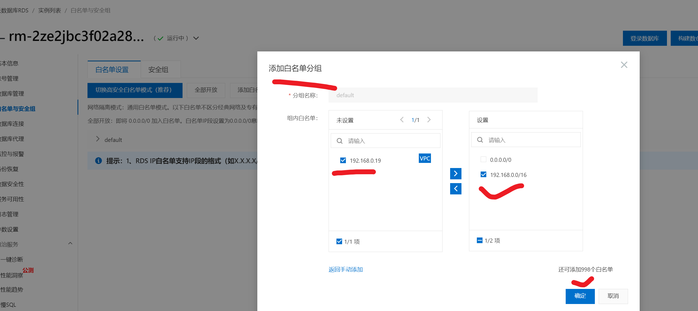
测试ECS访问RDS数据库
rm-2ze2jbc3f02a28va1.mysql.rds.aliyuncs.com
[root@devops-web01 ~]# yum install net-tools mariadb bind-utils -y
# 查看RDS DNS解析
[root@devops-web01 ~]# nslookup rm-2ze2jbc3f02a28va1.mysql.rds.aliyuncs.com
Server: 100.100.2.136
Address: 100.100.2.136#53
Non-authoritative answer:
Name: rm-2ze2jbc3f02a28va1.mysql.rds.aliyuncs.com
Address: 192.168.0.20
# 测试登录
[root@devops-web01 ~]# mysql -uroot -p -hrm-2ze2jbc3f02a28va1.mysql.rds.aliyuncs.com
Enter password:
ERROR 1045 (28000): Access denied for user 'root'@'192.168.0.19' (using password: NO)
[root@devops-web01 ~]#
RDS-Mysql数据库创建
创建业务库，jpress
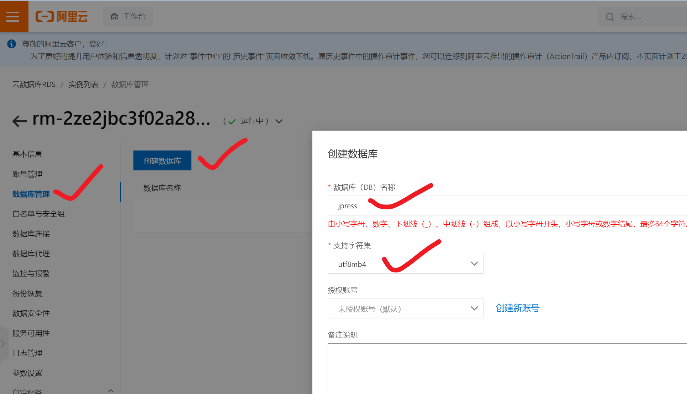
RDS-Mysql账户管理
jpress
Jpress123@@@
只允许读写jpress库
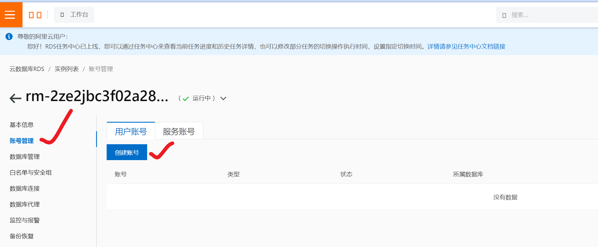
数据库授权
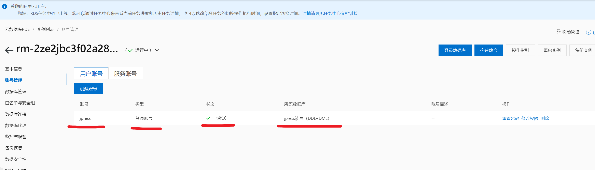
成功登录RDS数据库(内网DNS)
运维开发就干这事，让不懂技术的，也能通过点点点，维护linux应用。
[root@devops-web01 ~]# mysql -ujpress -p -hrm-2ze2jbc3f02a28va1.mysql.rds.aliyuncs.com
Enter password:
Welcome to the MariaDB monitor. Commands end with ; or \g.
Your MySQL connection id is 25122
Server version: 5.7.39-log Source distribution
Copyright (c) 2000, 2018, Oracle, MariaDB Corporation Ab and others.
Type 'help;' or '\h' for help. Type '\c' to clear the current input statement.
MySQL [(none)]>
MySQL [(none)]> show databases;
+--------------------+
| Database |
+--------------------+
| information_schema |
| jpress |
| mysql |
+--------------------+
3 rows in set (0.00 sec)
MySQL [(none)]> select version();
+------------+
| version() |
+------------+
| 5.7.39-log |
+------------+
1 row in set (0.00 sec)
MySQL [(none)]>
RDS-Mysql提供的访问架构图
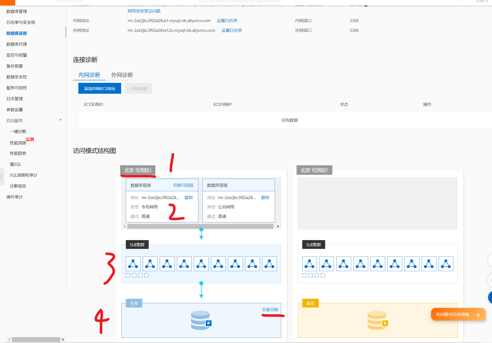
继续创建jpress应用
大功告成
RDS检查jpress网站数据
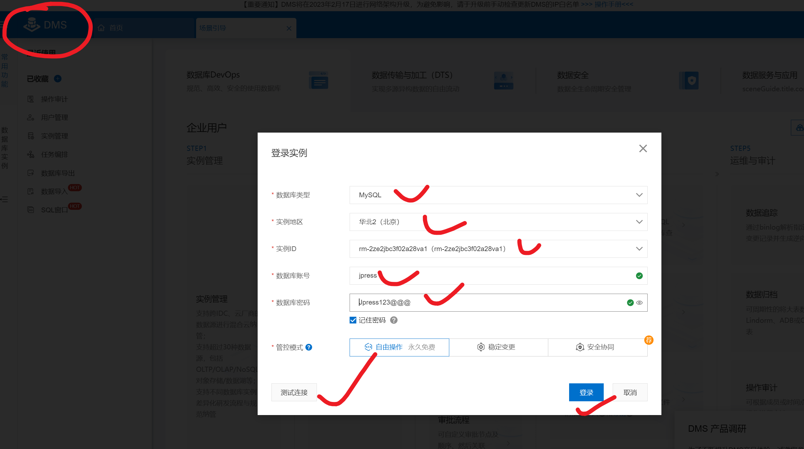
DMS数据库管理
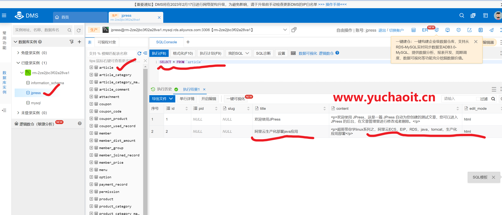
java上云迁移架构图
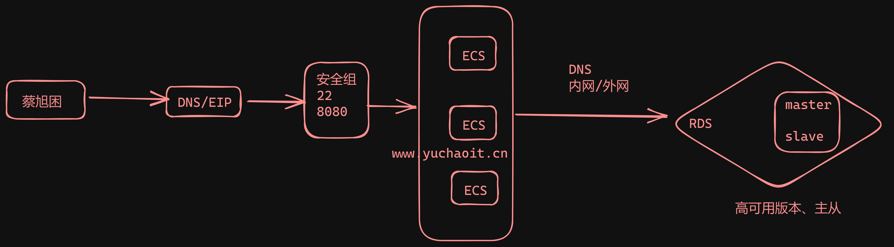